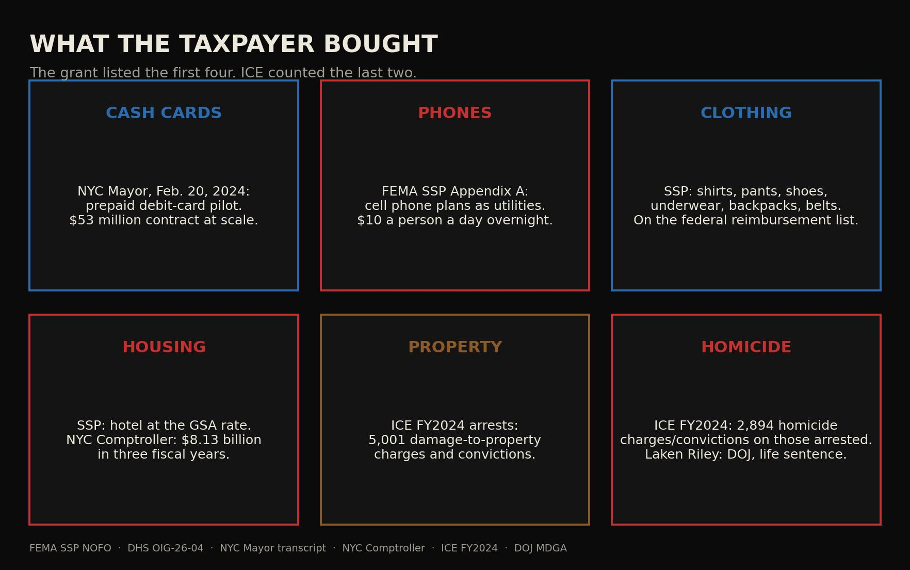

Journal · The Border · Sep 21, 2026 · 30-second read
What the taxpayer bought

in FEMA shelter grants, FY2023–24. The Inspector General found FEMA could not ensure it was used as the law required.
DHS Inspector General reportOpen the record ↗ ✓ Verified by SwampForce
The record Tap a card for the detail. Each one opens the source.
FEMA's 2024 grant rules listed hotels, clothing and phone plans as reimbursable.FEMA release
FEMA’s FY2024 Shelter and Services Program told applicants what the taxpayer would reimburse for people CBP had released: shelter, including hotel rooms at the GSA rate. Clothing — shirts, pants, outerwear, underwear, socks, shoes, backpacks, belts. Cell phone plans and internet, billed with electricity, gas and water as facility utilities, with all utilities together capped at $10 per migrant a day at overnight shelters and $5 a day otherwise.
FEMA releaseOpen the record ↗New York City: $8.13 billion for asylum-seeker services in three years.comptroller.nyc.gov
The Comptroller already booked the rooms: $8.13 billion in three fiscal years for asylum-seeker services in one city.
comptroller.nyc.govOpen the record ↗ICE: 81,312 criminal noncitizens arrested in FY2024 carried 516,050 charges and convictions.ice.gov
ICE’s FY2024 Annual Report: the 81,312 criminal noncitizens ERO arrested that year carried 516,050 charges and convictions.
ice.govOpen the record ↗Read the full essay
The verified text, checked against primary records on Sep 24, 2026. Passages marked Our view are opinion.
Our view Cash cards. Phones. Clothing. Housing. Then the rap sheet. The federal grant listed the first four. ICE counted the charges.
Image: /images/chart-what-they-bought.jpg — Six boxes: cash cards, phones, clothing, housing, property, homicide
The grant listed the shopping list. FEMA’s FY2024 Shelter and Services Program told applicants what the taxpayer would reimburse for people CBP had released: shelter, including hotel rooms at the GSA rate. Clothing — shirts, pants, outerwear, underwear, socks, shoes, backpacks, belts. Cell phone plans and internet, billed with electricity, gas and water as facility utilities, with all utilities together capped at $10 per migrant a day at overnight shelters and $5 a day otherwise. Cots. Linens. Laundry. The Inspector General later found FEMA could not ensure the $1.4 billion in SSP and EFSP-H for fiscal 2023–24 was used as the law required. The list was never a rumor. It was Appendix A.
Cash cards are on the city’s own tape. On February 20, 2024, the Mayor of New York described a prepaid debit-card pilot for migrant families: 500 families to start, a contract that could reach $53 million at scale, the balance loaded for food and baby supplies. The Comptroller already booked the rooms: $8.13 billion in three fiscal years for asylum-seeker services in one city. Housing was the hotel. The card was the grocery. Both were the taxpayer.
Then the rap sheet. ICE’s FY2024 Annual Report: the 81,312 criminal noncitizens ERO arrested that year carried 516,050 charges and convictions. In that pile: 5,001 damage to property. 2,894 homicides. 18,579 sexual assault and sex offenses. Those are not 2,894 murders committed in 2024. They are the homicide charges and convictions already on the people ICE arrested. CBP homicide and manslaughter convictions among Border Patrol criminal-alien arrests: three, three, two, three in fiscal 2017–20. Then 60, 62, 29, 29 in fiscal 2021–24. The Department of Justice put Laken Hope Riley on the record: kidnapped and brutally murdered February 22, 2024, in Athens, Georgia, during a morning run. Jose Antonio Ibarra, who had entered illegally, was convicted of that murder. The names and the docket are in The hospital. Then the morgue.. The shopping list and the rap sheet are the same open door.
Our view The grant paid for the phone and the hotel. ICE counted the smashed property and the homicide. The taxpayer paid for both.
Receipts
- FEMA SSP-A FY2024 NOFO — allowable costs — fema.gov ↗
- DHS OIG-26-04 — $1.4 billion SSP — oig.dhs.gov ↗
- NYC Mayor — debit-card transcript, Feb. 20, 2024 — nyc.gov ↗
- NYC Comptroller — asylum-seeker fiscal impacts — comptroller.nyc.gov ↗
- ICE FY2024 Annual Report — ice.gov ↗
- CBP — criminal noncitizen statistics FY2024 — cbp.gov ↗
- DOJ — Laken Riley murder investigation — justice.gov ↗